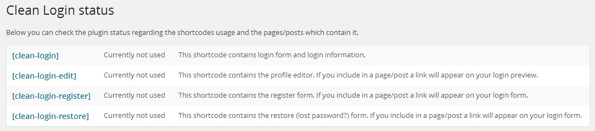
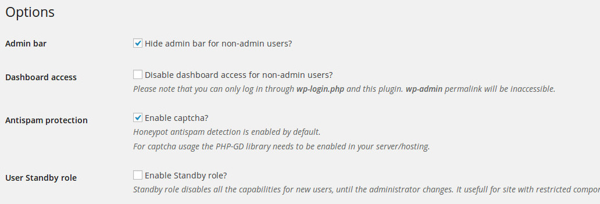
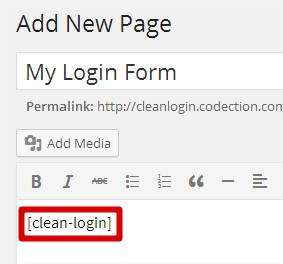
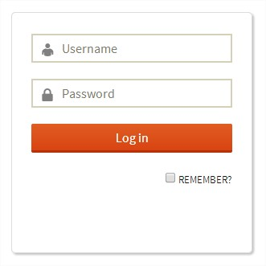
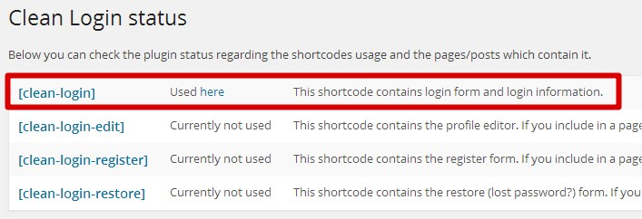

“Clean Login” Documentation by “Codection” v1.0
“Clean Login”
Created: 16/05/2014
By: Codection Team
Thank you for downloading our plugin. If you have any questions that are beyond the scope of this help file, please feel free to contact us at contacto@codection.com
Table of Contents
A) Installation - top
There are two ways of install the plugin:
- Unzip the zip file you downloaded from codecanyon.net. Open it, copy the 'clean-login' folder and place in your web server WordPress plugins directory using any FTP Client such as CUTEFtp, WS-FTP or FileZilla, or else follow the step below
- Log in to your WordPress administration panel then click Add New in the Plugins menu on the left side and click on the Upload link at the top of the page then Locate and upload the plugin zip archive that you extracted after downloading the package.
Then, after the package is uploaded and extracted, click Activate Plugin.
Now going through the points above, you should now see a new Clean Login menu item under Settings menu in the sidebar of the admin panel, see figure below of how it looks like.

If you get any error after following through the steps above though then please contact us through item support comments so that i can get back to you with possible helps in installing the plugin. On successful activation of this plugin, you should be able to see the login form when you place this shortcode [clean-login] in any page or post
B) Settings - top
Below, the description of each shortcode for use as registration, login, lost password and profile editor forms
| [clean-login] | This shortcode contains login form and login information. |
| [clean-login-edit] | This shortcode contains the profile editor. If you include in a page/post a link will appear on your login preview. |
| [clean-login-register] | This shortcode contains the register form. If you include in a page/post a link will appear on your login form. |
| [clean-login-restore] | This shortcode contains the restore (lost password?) form. If you include in a page/post a link will appear on your login form. |
Also, in the Clean Login settings page you can check the plugin status as follows:
In this setting page you can also find the way to enable/disable the differents options of the plugin, like below:
Regarding the widget usage, just place the Clean Login status and links widget in the widget area you prefer. It will show the user status and the links to the pages/posts which contains the plugin shortcodes.
Please feel free to contact us if you have any questions.
C) Example - top
A post/page need to be created by typing the main shortcode [clean-login] in the content, as follows:
When you save or update this post/page you will see the login form:
And also in the setting page [clean-login] entry will be updated pointing to the current post/page which contains the shortcode (and generates the login form):
We would repeat the same process with the rest of shortcodes if we need it:
- [clean-login-edit] to create an edit profile form
- [clean-login-register] to create a registration form
- [clean-login-restore] to create a forgotten password and restore form